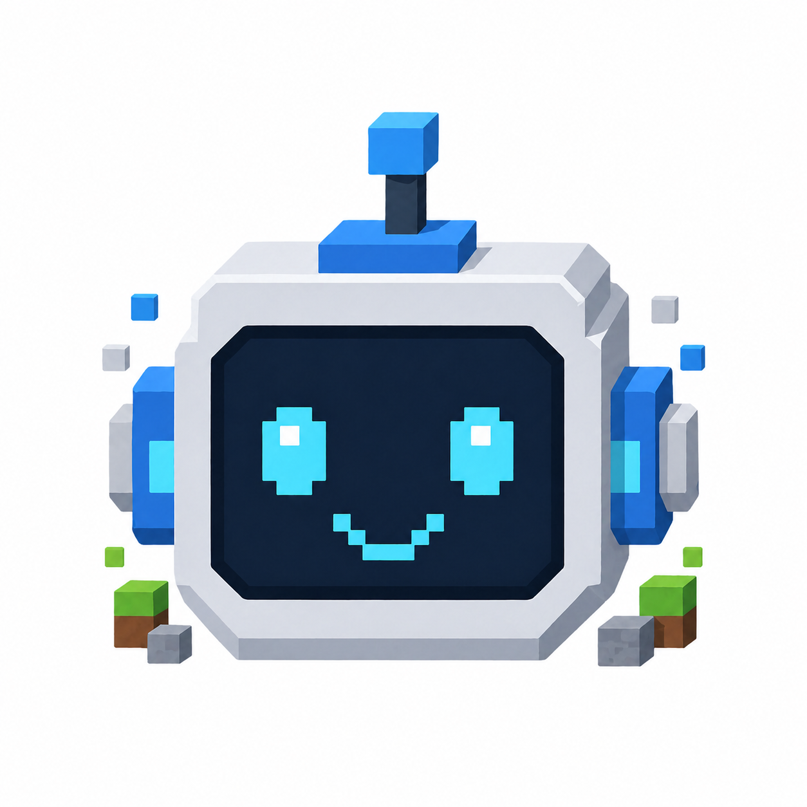

MCU mc-multimodal-agent — Minecraft Multimodal Agent

Most Minecraft bots cheat: they read raw world state, query block coordinates directly, and move with privileged APIs no human player has. MCU mc-multimodal-agent takes the harder path — it plays Minecraft the way a person does, by looking at the screen and acting through screen coordinates, driven by a multimodal LLM loop on top of Mineflayer.
This repository is the formal AgentBeats / Amber submission wrapper for the core
mc-multimodal-agent
project. It packages the Node agent into a reproducible Docker image, exposes an
A2A (Agent-to-Agent) JSON-RPC endpoint on port 9009, and ships a CI
workflow that builds, tests, and publishes the image to GitHub Container Registry on every push to
main.
The agent is built around an OpenClaw-style turn loop: each step composes an active prompt from persistent memory, sends a first-person frame and tool catalog to the model, executes the chosen tool, records the outcome, and compacts long context into LevelDB-backed layered memory notes — so it can pursue goals that span hours of in-game time without losing the thread.
How does it work?
Every turn, the agent receives a rendered first-person Minecraft frame and the current memory
snapshot. The model returns a single structured action — either a tool_call, an
ordered tool_calls batch, or a final answer. The host process executes
the tool against Mineflayer, captures the outcome, and feeds the next frame back into the loop.
Capabilities
- ✓ Multimodal LLM loop with image input + function tools
- ✓ Visual-first control via screen coordinates
- ✓ Mineflayer movement, digging, placing, crafting, chat
- ✓ Pathfinding and inventory management
- ✓ Blueprint loading and bottom-up block placement
- ✓ Nearby-player imitation traces
Memory & Skills
- ✓ Persistent goal trees for long autonomous tasks
- ✓ LevelDB-backed layered memory notes
- ✓ Indexed recall + recent transcript context
- ✓ Pre-compaction durable flushes
- ✓ Skill snapshots learned via
record_skill - ✓
soul.mdpersona loaded every turn
The agent supports both the OpenAI Responses API and Chat Completions,
including any OpenAI-compatible base URL. Structured outputs constrain each turn to a strict JSON
schema, and transient transport failures (429, 5xx, socket resets, timeouts)
are retried with exponential backoff before the task gracefully checkpoints.
What's in this submission wrapper
- Amber manifest —
amber-manifest.json5registers the agent with AgentBeats and exposes one A2A endpoint on port 9009 - Dockerfile — Builds the Node AgentBeats A2A service from the
mc-multimodal-agentsubmodule into a deployable image - A2A conformance tests —
pytestsuite that hits a running container and validates agent-card and message endpoints - CI workflow —
.github/workflows/test-and-publish.ymlbuilds, runs the conformance suite, and publishes to GHCR on every push tomain - Core agent submodule —
mc-multimodal-agent/is the upstream agent: Mineflayer bot, multimodal turn loop, memory, tool catalog, blueprints, and skills - Published image —
ghcr.io/madgaa-lab/mcu-mc-multimodal-agent:latestis pullable by the AgentBeats evaluator without local build steps
Quick Start
# Clone the wrapper and the core agent submodule
git clone https://github.com/MadGAA-Lab/MCU-mc-multimodal-agent.git
cd MCU-mc-multimodal-agent
git submodule update --init --recursive mc-multimodal-agent
# Build the submission image
docker build -t mcu-mc-multimodal-agent .
# Run with official OpenAI
docker run --rm -p 9009:9009 \
-e API_KEY="$OPENAI_API_KEY" \
-e OPENAI_API_KEY="$OPENAI_API_KEY" \
-e OPENAI_BASE_URL="https://api.openai.com/v1" \
-e OPENAI_MODEL="gpt-5.4" \
mcu-mc-multimodal-agent
# Health check (works without an API key)
curl http://127.0.0.1:9009/.well-known/agent-card.json
# Or pull the prebuilt image directly from GHCR
docker pull ghcr.io/madgaa-lab/mcu-mc-multimodal-agent:latest
# Run A2A conformance tests against a running container
uv sync --extra test
uv run pytest -v tests --agent-url http://127.0.0.1:9009Environment Variables
The container reads its model configuration from environment variables — no provider is hard-coded. Any OpenAI-compatible endpoint works as long as it implements Chat Completions with structured outputs.
- API_KEY — Model API key (required); also mirrored as
OPENAI_API_KEY - OPENAI_BASE_URL — Provider base URL (default:
https://api.openai.com/v1) - OPENAI_MODEL — Model name (default:
gpt-5.4; usegpt-5.5for hard visual planning) - AGENTBEATS_MODEL_EVERY_N_STEPS — How often the model is consulted between cheap deterministic steps (default:
4) - AGENTBEATS_DEFAULT_HOLD_STEPS — Default hold/wait steps between actions (default:
3) - AGENTBEATS_MAX_HOLD_STEPS — Upper bound on hold steps before forcing a model turn (default:
12)
Citation
If you use the MCU mc-multimodal-agent submission in your research or evaluation, please cite:
@software{mcu_mc_multimodal_agent,
title = {MCU mc-multimodal-agent: AgentBeats Submission Wrapper for a Multimodal Minecraft Agent},
author = {MadGAA-Lab},
year = {2026},
url = {https://github.com/MadGAA-Lab/MCU-mc-multimodal-agent},
note = {Formal AgentBeats / Amber submission wrapping win10ogod/mc-multimodal-agent}
}